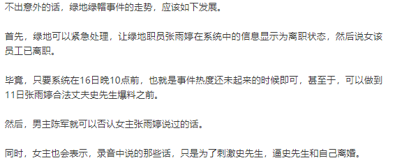

绿地绿帽事件出初步处理结果大佬的女人们如何保全自身权益
绿地绿帽事件出初步处理结果，大佬的女人们如何保全自身权益
昨天的文章 绿地绿帽事件的第四种可能及战术打法 ，发文时间是上午10点14分，其中提到了这么一段话。

然后，下午1点46分，女主张雨婷发微博了，几乎一模一样的做法，大家有兴趣可以去看看微博博主 sushbs 。
高度怀疑女主关注了地产天机，并照搬照抄昨天文中所提的打法。
不出所料，绿地内部系统已显示张雨婷已离职，这个办事效率有点高啊，正常来说，有点神速。
言归正传，绿地集团近日在内部传达了处理意见：撤销陈军京津冀事业部营销负责人的职务，并与其解除劳动合同关系。
据绿地核查，陈军在担任绿地京津冀事业部营销负责人期间，确存在举报所指不正当男女关系问题。
经济问题目前仍在核查中。
据悉，今天，绿地的CFO张蕴与绿地审计监察相关人员已到北京，展开调查。
其实，天机个人的看法，不能只查陈军在京津冀任职期间的经济问题，应该核查陈军在绿地的两段任职经历的经济问题，特别是东北。9000万是不是真的？若真，从何而来
谁都知道，绿地在东北烂摊子一堆，而时间点，就是冲200亿之后，堪称后遗症。
话说回来，在地产圈，这类出轨事件、抛弃妻子事件层出不穷。
比如珠海本土某百强房企的集团某副总经理，抛弃原配，小三成功上位；西南某龙头房企的总裁，生性好女色，董事长屡次劝诫而不改，至今仍经常在公司内部偷吃。
再比如闽系房企穷得要死的老板，在娶了行长的女儿做原配夫人后，又有了一个新的夫人；闽系房企某地王制造者的老板，2007年和公司的一位项目营销总，有了一位私生子，后来原配夫人和两个儿子经常四处抓父亲的小三，近些年有所收敛；粤系某龙头房企的老板，私生子都上中学了，很聪颖。
还有不少人，把大量的财产登记在一方名下，自己负债累累，最后对方跑了。
可以从以上举例的事件，看每个人处理的方式不同，结果也不同。
第一位副总经理的原配，后知后觉，对对方太过信任，然后什么都没得到，在对方转移财产几乎一干二净后，离婚，所得无几。
第二位，穷得要死的那位闽系房企老板的原配，后来离婚，带着儿子远去加拿大定居，得到了该得到的财产分配。
第三位，地王制造者的老板原配夫人，小三抓是抓不完了，但公司上市前，把该得的、该争取的，都登记在两个儿子名下。
第四位，粤系龙头房企，老板娘和几个女儿更聪明，你不是想要儿子吗，生就生了，那股权之类的，都登记在女儿名下。
好的婚姻，坦诚相待是基础，相互信任是前提。理清资产所属关系，婚前财产受保护，婚后财产共有。这类做法并不存在相互算计，保护不了自己的精神不受上伤害，起码保护自己的物质财产等不受侵害。
写地产天机这九个月来，听过、见过太多这方面的分离、扯皮，有时着实心累。
在此，还是想说，女孩子们别乱搞，你不知道以后你的圈层、你的子女会如何看待你；男同胞们也别乱搞，珍惜有个人愿意陪着你，别以为自己魅力大就可以乱来，女孩子真要渣起来，根本没你什么事。
十五分钟写完稿，平时错别字偶尔略多，请大家多担待。
最后，祝地产天机的所有机友，感情忠诚，家庭和睦，懂得珍惜。
按日期浏览全部来源（同日按条目标识排序）